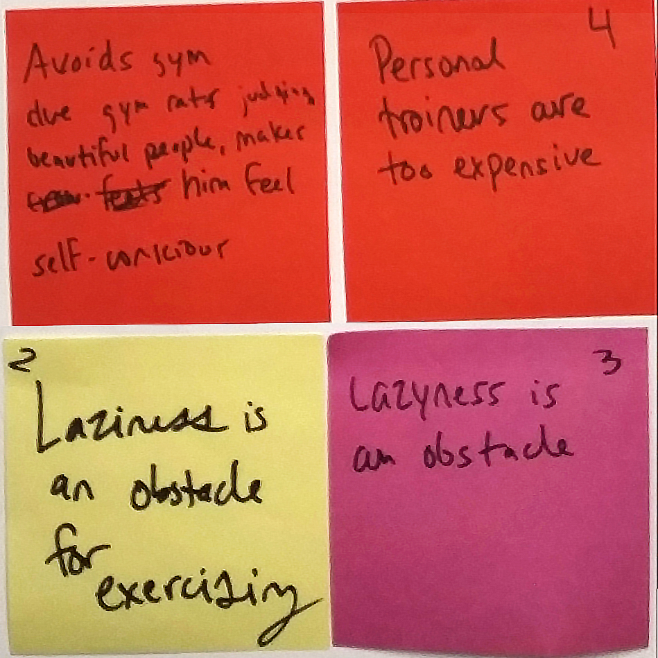

About COACH
COACH is an innovative app designed to connect users with professional personal trainers both online and in person. Each trainer crafts weekly exercise plans tailored to the user's individual goals. Additionally, the built-in messaging system fosters seamless communication and regular progress tracking.
1. Understanding the Problem
- 
-

-

-

I led our team in identifying core user challenges through comprehensive research, including interviews and surveys. We discovered that despite the prevalence of fitness trackers, people struggled with key barriers to maintaining a healthy lifestyle.
The key barriers were:
- Motivation
- Accountability
- Accessibility
2. User Personas
I created user personas, Pete and Matt, to embody our target users' struggles:

Pete
Pete lacked motivation, felt insecure about gym environments, and preferred flexible workout options.

Matt
Matt needed advanced fitness guidance and sought variety to overcome workout plateaus.
3. Data-Driven Feature Design
Addressing Accessibility: I prioritized flexible workout options that enable users to train anytime, anywhere. For example, Pete’s frequent travel influenced the development of features that allow him to maintain consistency without a gym.
Enhancing Motivation: Drawing from our insight that users are motivated by trusted sources, I designed features that connect users with certified trainers who offer personalized plans and direct mentorship.
Building Accountability: Recognizing the importance of accountability, I integrated a progress dashboard and regular coach check-ins. Users receive personalized feedback, fostering a sense of commitment.
4. Concept Development
I spearheaded the development of multiple app concepts:

Concept 1
Custom Training Regimes: Personalized plans with proactive activity suggestions based on user interests.

Concept 2
Coach Pairing Programs: Users commit to programs with assigned trainers who provide both in-person and online support.

Concept 3
Gamification for Motivation: Reward systems encouraging consistent workouts.
Accountability Through Consequences: Features like monetary penalties for missed workouts.
Through iterative testing, I found that while concepts involving forced group participation were less appealing, users preferred options that offered personalization and one-on-one coaching.
Acknowledging real-world constraints (e.g., gym policies), I advocated for pivoting towards a more feasible solution:
COACH connects users with certified trainers who offer hybrid coaching models that combine in-person sessions with ongoing virtual support.
The messaging system enables continuous communication, while the progress dashboard holds both users and trainers accountable.
Impact
My contributions ensured that every feature was grounded in user research, addressing real pain points while aligning with technical feasibility. This user-centered, research-driven design approach transformed COACH into a compelling, market-ready product.
Key Learnings
Through this process, I learned the significance of balancing user desires with practical constraints. Continuous user feedback and adaptability were crucial in refining the app to meet both user needs and business viability.